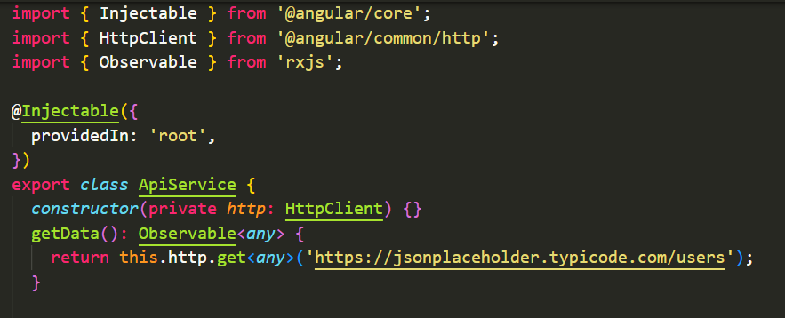
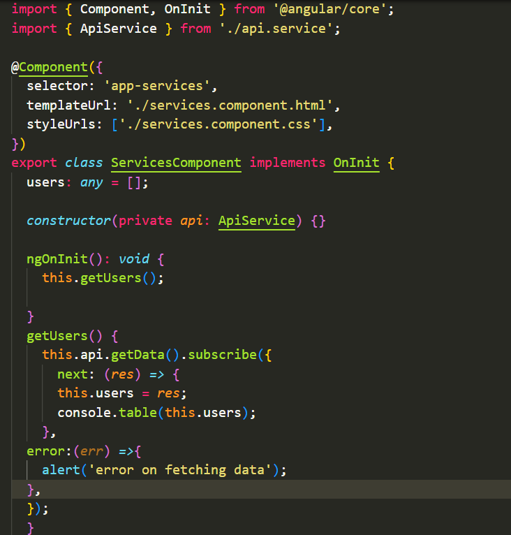
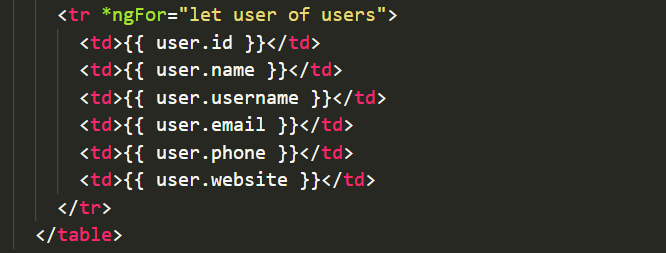

<div class="container p-5">
  <div class="row">
    <div class="col-md-12">
      <h5>
        Services are one of the most important concept in angular. It is used to
        share data across the components in angular application. It is a
        typescript class used for sharing data or functionality across the
        application. Services can be inject using <code>constructors()</code>.
        It is a best practice for code reusability. Angular Services come as
        objects which are wired together using dependency injection. Services
        are also used to make HTTP requests.
      </h5>
      <h5 class="text-primary pt-3">Dependancy injection</h5>
      <p>
        Dependency Injection (DI) is a mechanism where the required resources
        will be injected into the code automatically. Dependancy injection is
        the ability to provide the functionality at runtime. Dependency
        Injection is built into the Angular framework and used throughout to
        provide new components with the services or other resources they
        require.
      </p>
      <h5 class="text-primary pt-3">HttpClient</h5>
      <p>
        It is a Http library of angular which is used to communicate with
        backend. HttpClient can be used to send requests and retrieve their
        responses from an URL/API. HttpClient is a built-in service class
        available in the
        <code>@angular/common/http</code> package. It has multiple signature and
        return types for each request. It uses the RxJS observable-based APIs,
        which means it returns the observable and what we need to subscribe it,
        to use it <code>HttpClientModule</code> must be imported in app module.
        Methods available in HttpClient are-
        <code>get(), post(), put(), delete()</code>.
      </p>
      <div class="col-md-12 table-responsive">
        <table class="table table-bordered border-light table-striped">
          <tr class="bg-warning">
            <th>ID</th>
            <th>NAME</th>
            <th>USERNAME</th>
            <th>EMAIL</th>
            <th>PHONE</th>
            <th>WEBSITE</th>
          </tr>
          <tr *ngFor="let user of users">
            <td>{{ user.id }}</td>
            <td>{{ user.name }}</td>
            <td>{{ user.username }}</td>
            <td>{{ user.email }}</td>
            <td>{{ user.phone }}</td>
            <td>{{ user.website }}</td>
          </tr>
        </table>
      </div>
      <p>
        This data is coming from api
        <a href="https://jsonplaceholder.typicode.com/users">https://jsonplaceholder.typicode.com/users</a>, using Http
        <code>get()</code> method.
      </p>
      <div class="col-md-12 pt-3">
        <h5 class="text-primary">How to create a service</h5>
        <p>
          Service can be create using the below command<br />
          <code>ng generate service 'service-name'</code>
        </p>
      </div>
      <div class="row">
        <div class="col-md-12">
          
        </div>
      </div><br>
      <div class="row">
        <div class="col-md-12">
          
        </div>
      </div><br>
      <div class="row">
        <div class="col-md-12">
          
        </div>
      </div>
    </div>
  </div>
</div>